The Vending Machine That Called for Help — RMA, Loaner and Depot Repair
Nobody at Mile High City Bank noticed anything was wrong. The drinks were cold, the machine took cards, and the staff lounge was as busy as ever. The vending machine noticed first. This chapter follows one service request from the moment a machine reports its own trouble to the moment the repaired machine is back in its corner, and shows the four order lines it takes to get there.
👥 Characters in This Chapter
Alex — Service Agent, ABC Corporation (new in this chapter)
Cynthia Michael — Facilities, Mile High City Bank (from Chapter 4)
The depot repair manager and repair technician at ABC's Denver Repair Center (not named)
Scene 1 — The Machine Notices First (Mile High City Bank)
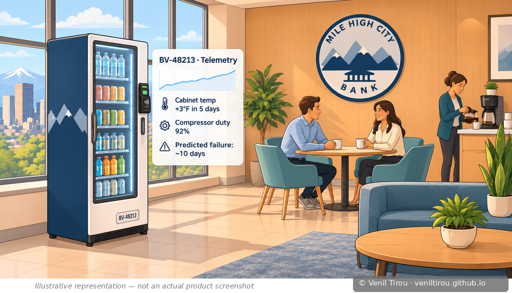
📱 On mobile? Pinch to zoom to read the details clearly.
The machine is not anonymous to ABC. In Installed Base it is an asset with a serial number (BV-48213), a model (BV-500), a location (Denver branch, staff lounge), an owner (Mile High City Bank) and a configuration (firmware 4.2, card reader, eight spiral rows). That asset record is what every later step hangs on.
Scene 2 — The Service Request Writes Itself (ABC Corporation)
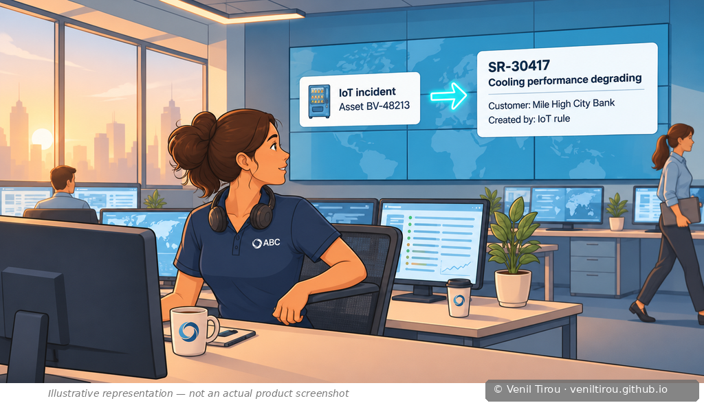
📱 On mobile? Pinch to zoom to read the details clearly.
This works because both systems agree on what the asset is. ABC uses Installed Base assets on its service requests, the same asset model its supply chain and service logistics use, so the asset the sensor reports on is the same asset the SR, the repair and the shipments will refer to.
Scene 3 — Alex Takes the Case (ABC Corporation)
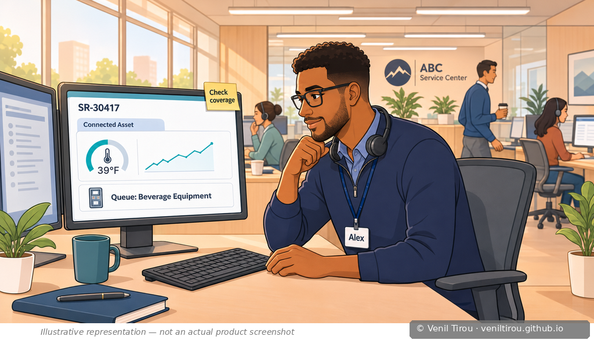
📱 On mobile? Pinch to zoom to read the details clearly.
Alex's first question is not "what's wrong?" (the telemetry has a good guess) but "what is Mile High entitled to?"
Scene 4 — What Mile High Is Entitled To (ABC Corporation)
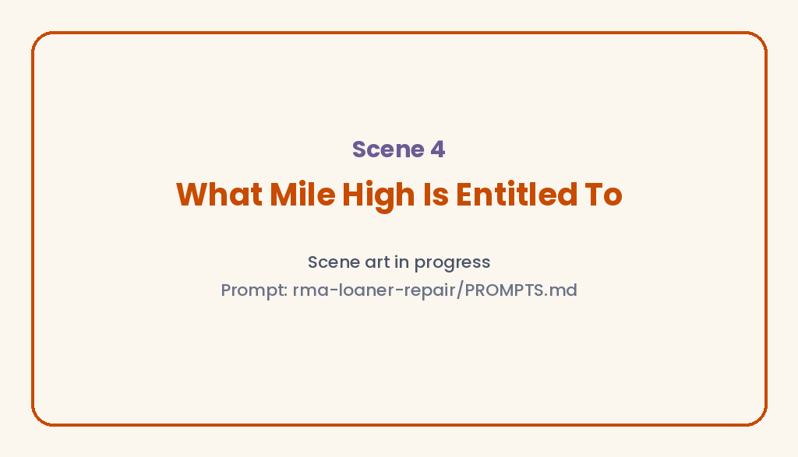
📱 On mobile? Pinch to zoom to read the details clearly.
Gold coverage also changes the clock. The four-hour response is a milestone on the SR, so Alex's next step is a call.
Scene 5 — Alex Calls Cynthia (Mile High City Bank)
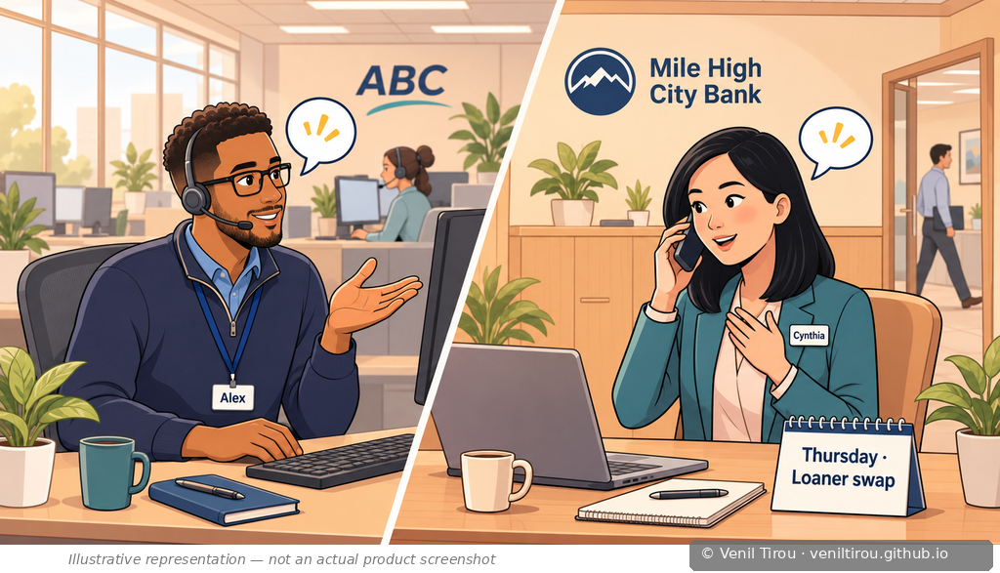
📱 On mobile? Pinch to zoom to read the details clearly.
The call is logged on SR-30417 as an interaction, and the first-response milestone is met. From here on, every movement of either machine will be visible from the same SR.
Scene 6 — Three Lines from One SR (ABC Corporation)
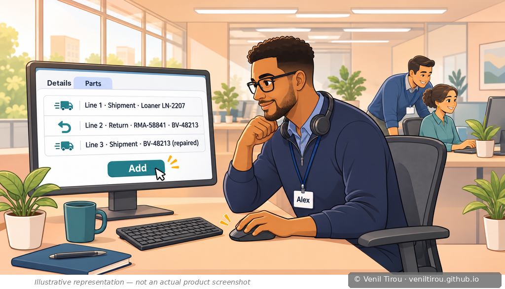
📱 On mobile? Pinch to zoom to read the details clearly.
Line 1 — Ship the loaner. A shipment line for loaner unit LN-2207, sourced from ABC's Denver warehouse.
Line 2 — Return the faulty machine. A return line: the RMA, RMA-58841, for BV-48213, with ABC's Denver Repair Center as its destination. The RMA number goes to Cynthia.
Line 3 — Send it home again. Because the RMA uses a depot repair activity, its matching shipment line is created at the same time, for the same item, to ship the repaired machine back.
Note what is missing: nothing yet brings the loaner back. That fourth line comes later, when there is something to swap it for.
Scene 7 — Approved and Orchestrated (ABC Corporation)
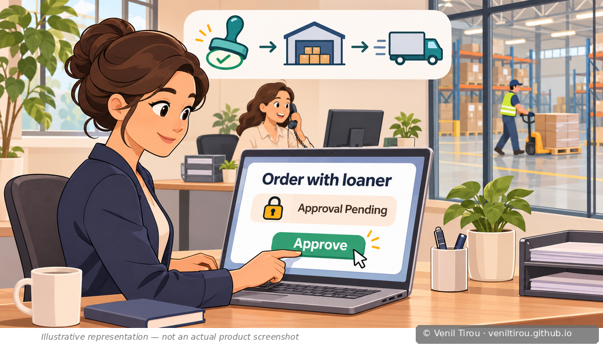
📱 On mobile? Pinch to zoom to read the details clearly.
The approval is not a feature of RMAs or loaners. It is an Order Management rule that ABC chose to set up, and it could just as easily be based on order value or customer.
Scene 8 — Swap Day in Denver (Mile High City Bank)
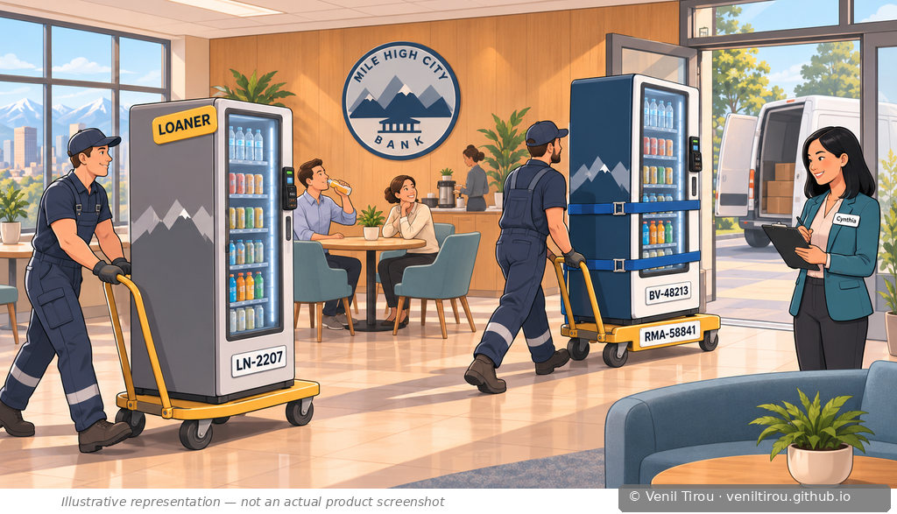
📱 On mobile? Pinch to zoom to read the details clearly.
Installed Base keeps the two straight. BV-48213 is still Mile High's asset, now away for repair. LN-2207 is ABC's asset, temporarily at the bank's site. And because new Installed Base assets can sync to the IoT service, the loaner is monitored from the moment it is plugged in.
Scene 9 — At the Repair Center (ABC Corporation)
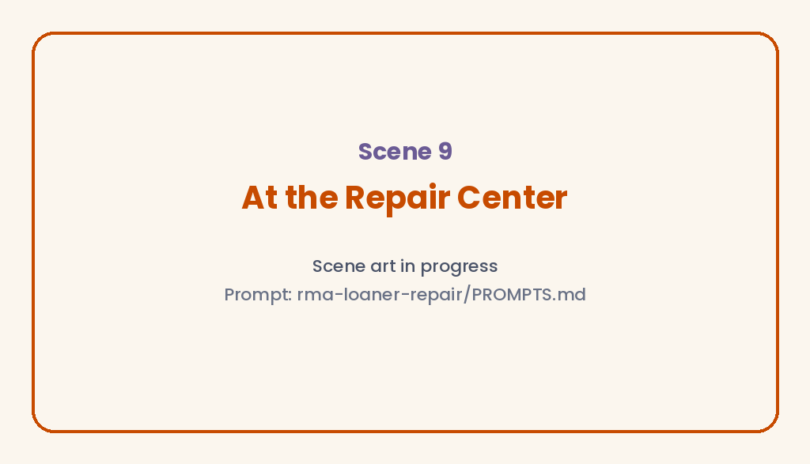
📱 On mobile? Pinch to zoom to read the details clearly.
From there the manager creates a repair work order, based on a standard work definition for the BV-500's cooling system. The technician's diagnosis confirms what the telemetry suggested: the condenser fan motor is failing, so the compressor has been running hot to compensate.
Scene 10 — The Estimate Cynthia Doesn't Pay (Mile High City Bank)
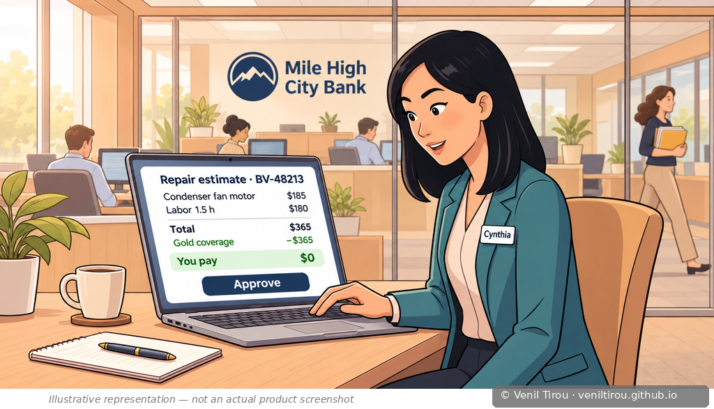
📱 On mobile? Pinch to zoom to read the details clearly.
Cynthia approves it anyway. With nothing to pay, the approval is a courtesy, not a gate. It would matter if the fault were outside the coverage, for example damage, and then the estimate is exactly where that conversation would happen.
Scene 11 — Repaired, Tested, and Home (ABC Corporation)
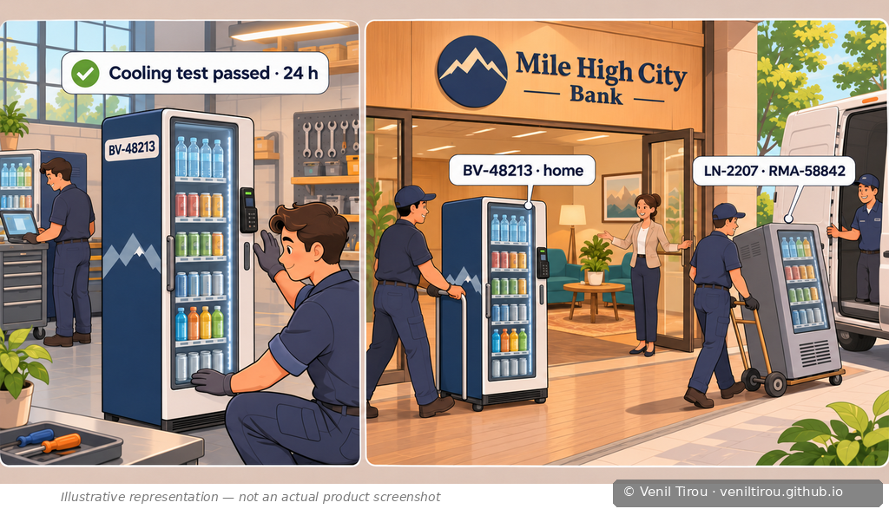
📱 On mobile? Pinch to zoom to read the details clearly.
Then the swap runs in reverse. BV-48213 ships home on Line 3, the shipment line created back in Scene 6, sourced from the repair center's own shipping dock rather than the parts warehouse. Alex adds Line 4, a second RMA (RMA-58842), so the loaner is received back into ABC's Denver warehouse. Installed Base records BV-48213 at the Denver branch again, with its new configuration.
Scene 12 — Closing the Loop (ABC Corporation)
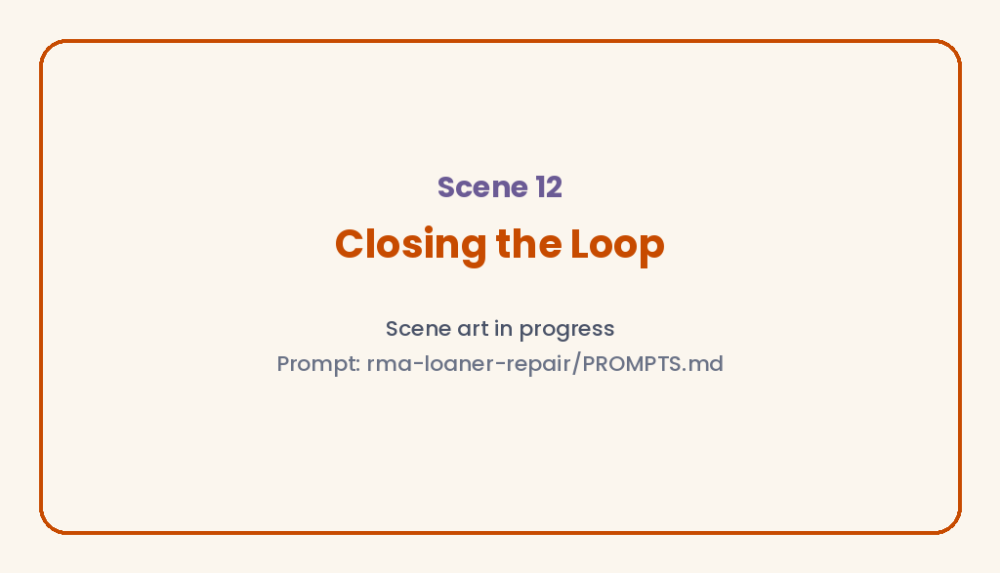
📱 On mobile? Pinch to zoom to read the details clearly.
Then he writes what the next agent will need: a knowledge article, "BV-500: rising cabinet temperature with high compressor duty cycle — check the condenser fan motor", with the root cause and the fix. Resolving the SR also closes the IoT incident that started it. The loop that a sensor opened is closed by the same SR.
The Ledger — Four Lines, Two Machines
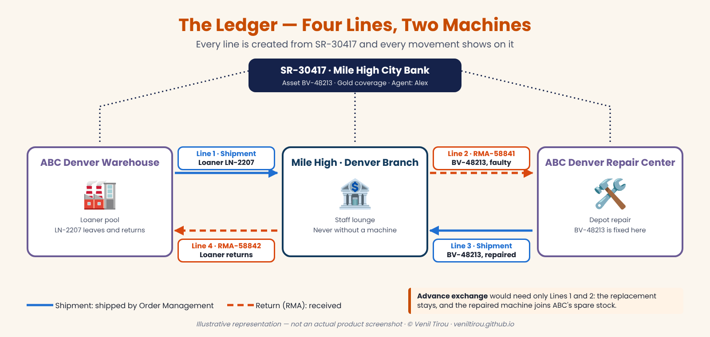
📱 On mobile? Pinch to zoom to read the details clearly.
| # | Line type | Machine | From → To | Created |
|---|---|---|---|---|
| 1 | Shipment (sales order) | Loaner LN-2207 | ABC Denver warehouse → Denver branch | Scene 6 |
| 2 | Return (RMA-58841) | BV-48213, faulty | Denver branch → ABC Denver Repair Center | Scene 6 |
| 3 | Shipment, linked to the RMA | BV-48213, repaired | Repair center dock → Denver branch | Scene 6, shipped in Scene 11 |
| 4 | Return (RMA-58842) | Loaner LN-2207 | Denver branch → ABC Denver warehouse | Scene 11 |
Why This Chapter Matters
The service request is the spine. Alex never leaves it: the coverage, the RMA, the shipments, the repair status, the estimate and the knowledge article all hang from SR-30417. That is what lets one agent own a case that crosses Service, Order Management, Inventory, the repair center and Maintenance.
And note where it started. Because the asset was connected, the repair began before the machine failed. Predictive service is not a different process; it is the same process, started earlier.
Concepts Covered
| Concept | What it means | Scene |
|---|---|---|
| Connected asset | An asset whose telemetry is monitored by Oracle's IoT service. An incident rule can create the service request in B2B Service automatically, and the SR's Connected Asset tab shows the readings. | 1, 2, 3 |
| Installed Base asset | The record of a specific unit at a customer: serial number, model, owner, location and configuration. Using Installed Base assets on SRs lets service, logistics and IoT share one asset model. | 1, 2, 8, 11 |
| Assignment | Rules place the SR in a queue; routing hands it to an available agent with the right skills. | 3 |
| Entitlement and coverage | The coverage on the customer's subscription decides what the agent can offer (here, a loaner and depot repair) and what the customer pays. | 4, 10 |
| Return Material Authorization (RMA) | A return order line that authorizes the customer to send a unit back and tells the receiving location to expect it. Its number is shared with the customer. | 6, 8, 11 |
| Service activity code | The code an agent picks when adding a logistics line to the SR. It decides whether the line is a shipment or a return, and which order line type Order Management uses. | 6 |
| Loaner, repair and return | The customer gets a loaner unit while their own unit is repaired and returned: four lines, two shipments and two returns. Not the same as an advance exchange, where the swap is permanent. | 6, 8, 11, Ledger |
| Order approval | An optional Order Management rule that holds an order at Approval Pending until an approver accepts it. | 7 |
| Fulfillment orchestration | Order Management's process for each order line: shipments are picked, packed and shipped; returns are expected and received. | 7, 8 |
| Depot repair | Repair at a central repair center, managed from the Depot Repair page: the returned unit, its repair work order, estimate, technician debrief and charges, all in one place. | 9, 10, 11 |
| Repair estimate | Estimated material, labor and other charges on the repair work order, adjusted for coverage before it goes to the customer. | 10 |
| Knowledge article | The root cause and fix, written so the next agent who sees the same symptoms can resolve it faster. | 12 |
Sources: Oracle documentation — Integrate Oracle B2B Service with Oracle Service Monitoring for Connected Assets, IoT Service Monitoring for Connected Assets, Installed Base Assets for service requests, Order Parts for Sale, Return, and Exchange, Overview of Depot Repair, Create Depot Repair Estimates, Get Approvals for Sales Orders. Illustrative representation — not an actual product screenshot.